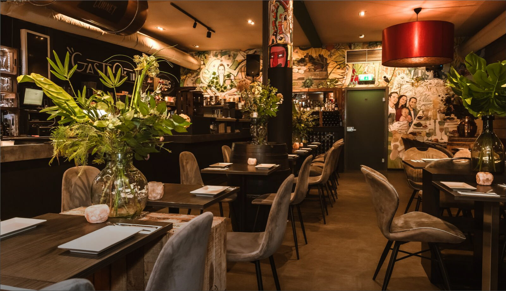
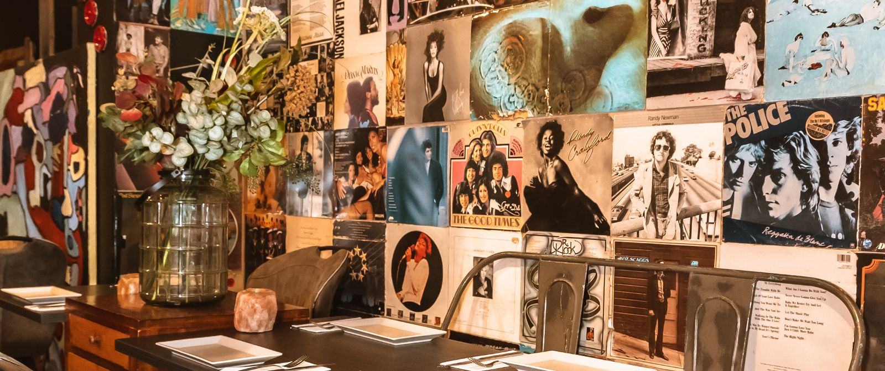
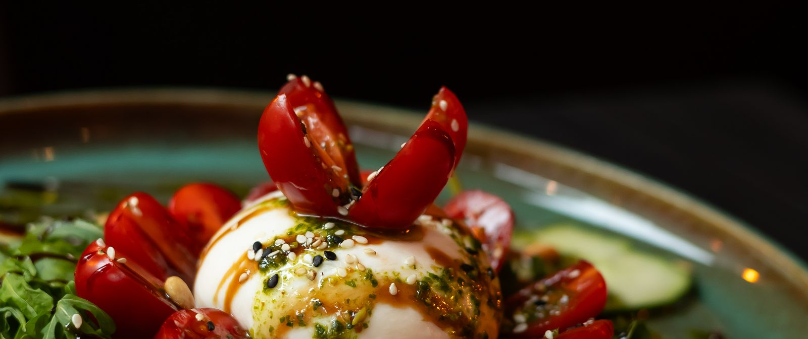
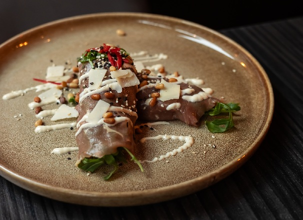
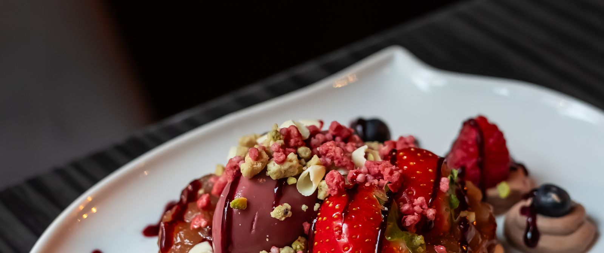
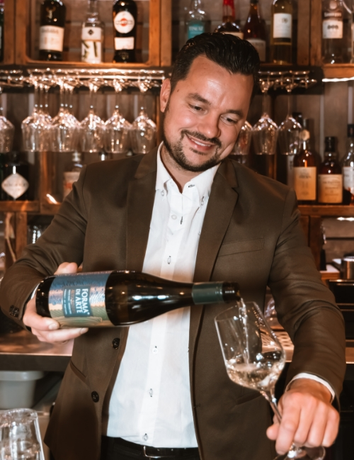

Shared dining aan de Hartmansstraat, Rotterdam
Waar smaken samenkomen
Wereldse shared dining gerechten van een hecht familiebedrijf, om de hoek van de Witte de Withstraat. Met een ruime keuze in vlees, vis en vega, in een warme, huiselijke sfeer waar u zelf het tempo aangeeft.
Sharing specials van het seizoen
Samen delen, dát proef je. Deze winter staan er vier nieuwe seizoensspecials op de kaart, van hertenbiefstuk met truffelsaus tot red velvet met cranberryjam.
Bekijk de specialsOpeningstijden rond kerst
Op 25, 26 en 31 december en 1 januari zijn we gesloten. Op zondag 20 en 27 december en 3 januari zijn we extra open vanaf 17.00 uur.
Alle feestdagtijdenEen smaakvolle ontmoeting in het bruisende Rotterdam
Midden in het centrum van Rotterdam vindt u de wereldkeuken van een hecht familiebedrijf. Wij serveren shared dining gerechten met een ruime keuze in vlees, vis en vega. Ofwel: gastronomie gericht op beleving en gezelligheid.
In plaats van een traditioneel voor-, hoofd- en nagerecht kiest u samen meerdere koude en warme gerechten om te delen aan tafel. Een deel van de kaart wisselt twee keer per jaar, zodat we u steeds weer kunnen verrassen met producten van het seizoen. Ons team adviseert u graag over de juiste combinatie en het aantal gerechten.





Sinds 28 december 2013
Familiebedrijf Hartig
Op 28 december 2013 openden de deuren van Gastrobar Hartig aan de Hartmansstraat in Rotterdam. Opgericht door Stephan de Leur en zijn schoonfamilie. Als familie met een groot horecahart ontvangen we onze gasten altijd met open armen.
We zijn klein begonnen en inmiddels uitgegroeid tot een bekende gastrobar in Rotterdam met hoge waarderingen op onder meer TripAdvisor en Google. We varen onze eigen koers en verrassen onze gasten met onze eigen kijk op horeca, ingrediënten en sfeer.
We houden rekening met allergieën en dieetwensen, gaan voedselverspilling tegen en hebben altijd plek voor onze zakelijke gasten.
Met een groep, voor zaken of als cadeau
Groepen
Hartig is als warm familiebedrijf een zeer geschikte locatie voor groepsdiners, verjaardagen en bedrijfsuitjes. Shared dining is juist ideaal voor groepen: samen proeven en delen.
Komt u met een grotere groep? Neem dan contact op via info@gastrobarhartig.nl of bel 010-2367548 (ma t/m za 14:00 - 17:00). We maken graag een voorstel op maat, passend bij uw wensen en budget. Op zondag zijn we te boeken voor groepen.
Zakelijk
Komt u zakelijk, bijvoorbeeld voor een bedrijfsdiner, vergadering of borrel met collega's of relaties? Dan maken we graag aparte afspraken over het menu, de tijden en de ruimte.
Ook voor besloten lunches, diners of speciale gelegenheden kunt u altijd contact met ons opnemen. Overdag zijn we beschikbaar voor groepsreserveringen.
Giftcard
Wilt u ook een Gift Card van Hartig? Vraag deze bij uw eerstvolgende bezoek aan en u heeft een heel leuk cadeau. Wij kunnen de Gift Card ook voor u opsturen: stuur ons een mail en wij sturen deze naar u op.
Reserveer uw tafel
Kies het aantal personen, de datum en het tijdstip. Na uw reservering ontvangt u een bevestiging per e-mail. Online volgeboekt? Neem gerust contact op, want er is vaak nog plek.
Liever bellen of mailen? 010-2367548 of reserveringen@gastrobarhartig.nl. Telefonisch bereikbaar ma t/m vr 13:00 - 23:00 en za 11:00 - 23:00.
Openingstijden
| Maandag | 17.00 – 00.00 |
| Dinsdag | 17.00 – 00.00 |
| Woensdag | 17.00 – 00.00 |
| Donderdag | 17.00 – 00.00 |
| Vrijdag | 17.00 – 00.00 |
| Zaterdag | 12.00 – 00.00 |
| Zondag | gesloten, groepen op aanvraag |
Op doordeweekse dagen is de keuken open tot 21:30. Op verzoek kan de keuken langer open blijven.
Iedere vrijdag en zaterdag late night dinner: de keuken is dan open tot 23:00.
Lunch serveren we op zaterdag vanaf 12:00.
Feestdagen 19 december t/m 3 januari
| Za 19 december | 12.00 – 00.00, keuken tot 23.00 |
| Zo 20 december | 17.00 – 00.00, keuken tot 21.30 |
| Ma 21 t/m do 24 december | 17.00 – 00.00, keuken tot 21.30 |
| Vr 25 december | gesloten (1e Kerstdag) |
| Za 26 december | gesloten (2e Kerstdag) |
| Zo 27 december | 17.00 – 00.00, keuken tot 21.30 |
| Ma 28 t/m wo 30 december | 17.00 – 00.00, keuken tot 21.30 |
| Do 31 december | gesloten (Oudjaarsdag) |
| Vr 1 januari | gesloten (Nieuwjaarsdag) |
| Za 2 januari | 12.00 – 00.00, keuken tot 23.00 |
| Zo 3 januari | 17.00 – 00.00, keuken tot 21.30 |
Hartmansstraat 20A
Adres
Hartmansstraat 20A, 3012 VA Rotterdam. Direct om de hoek van de Witte de Withstraat.
Met het openbaar vervoer
Metrostation Eendrachtsplein en station Beurs liggen op ongeveer 5 minuten lopen, tramhalte Museumpark om de hoek. Vanaf Beurs rijdt metro D of E zonder overstap naar Zuidplein: zo bent u in ongeveer 10 minuten bij Rotterdam Ahoy. De Doelen ligt op ongeveer 10 minuten lopen.
Parkeren
U kunt aan de overkant van het restaurant parkeren, maar het is goedkoper in Parkeergarage Lijnbaan, op slechts 5 minuten lopen.
Betalen
Pin, contant en creditcard. U kunt bij ons ook met Bitcoin betalen: vermeld dit dan vooraf bij uw reservering.
Veelgestelde vragen
Wat houdt shared dining bij Hartig in?
Alles draait om samen genieten en verschillende smaken ontdekken. In plaats van een traditioneel voor-, hoofd- en nagerecht kiest u samen meerdere koude en warme gerechten om te delen aan tafel. De koude gerechten zijn te vergelijken met een voorgerecht, de warme hebben het formaat van een hoofdgerecht.
Uit eten gaan draait niet alleen om eten, maar om de totale beleving: samen delen, proeven, ontdekken en genieten. Ons team adviseert u graag over de juiste combinatie en het aantal gerechten per persoon.
Welke gerechten staan er op de kaart?
Een ruime variatie aan vlees-, vis- en vegetarische gerechten. Naast de gerechten om te delen serveren we verfijnde appetizers voor bij de borrel en ambachtelijke desserts als afsluiting. Onze chefs werken met verse seizoensproducten; de kaart wordt twee keer per jaar vernieuwd.
Kan ik bij jullie lunchen?
Zeker! Elke zaterdag vanaf 12:00 uur serveren wij een uitgebreide lunch, met hartige gerechten en lichte bites. Ideaal tijdens een dagje uit in het centrum van Rotterdam.
Wat voor dranken en cocktails serveren jullie?
Een zorgvuldige selectie van wijnen, lokale speciaalbieren en signature cocktails. Of u nu komt voor een uitgebreid diner of een gezellige borrel met bites: er is een passende pairing voor elk gerecht.
Is Hartig geschikt voor een groepsdiner of bedrijfsuitje?
Zeker. Groepsdiners, verjaardagen, bedrijfsuitjes en andere gelegenheden zijn van harte welkom. Voor groepen maken wij graag een voorstel op maat. Neem contact op via info@gastrobarhartig.nl of 010-2367548, zodat we uw wensen en eventuele allergieën goed kunnen afstemmen.
Hoe reserveer ik een tafel?
Voor kleine gezelschappen reserveert u eenvoudig online. Voor groepen vragen we u contact met ons op te nemen per e-mail of telefoon.
Kan ik met Bitcoin betalen?
Ja, wij zijn een van de weinige restaurants in Rotterdam waar u met Bitcoin (BTC) kunt betalen. Uiteraard accepteren wij ook pin, contant geld en creditcards. Wilt u met Bitcoin betalen? Vermeld dit dan bij uw reservering, zodat we het goed kunnen voorbereiden.
Werken bij Hartig
Gastrobar Hartig is geen doorsnee restaurant. Wij zijn een shared dining gastrobar in hartje Rotterdam waar gastvrijheid, kwaliteit, sfeer en beleving samenkomen.
Wij zoeken geen "uurtjes-vullers". Wij zoeken talent met energie.
- Bediening / gastheer / gastvrouwVoor mensen met gevoel voor service, gastvrijheid en sfeer.
- Floormanager / rechterhand ondernemerJe denkt mee, houdt overzicht, werkt direct samen met de eigenaar en helpt bouwen aan de zaak.
- Allround horeca (bar, service, organisatie)Voor de allrounders die energie krijgen van een volle, dynamische zaak.
- Je leert hier écht het horecavak op niveau.
- Je krijgt snel verantwoordelijkheid en toont initiatief.
- Je denkt actief mee over de zaak en ontwikkelt jezelf sneller dan in een standaard café of keten.
- Korte lijnen: je werkt direct samen met de eigenaar.
Bij Hartig doen we het samen. Je bent betrouwbaar, communiceert duidelijk en komt afspraken na. Je krijgt er een hecht team voor terug, ruimte voor jouw ideeën, flexibiliteit waar mogelijk en een plek waar je écht gezien wordt.